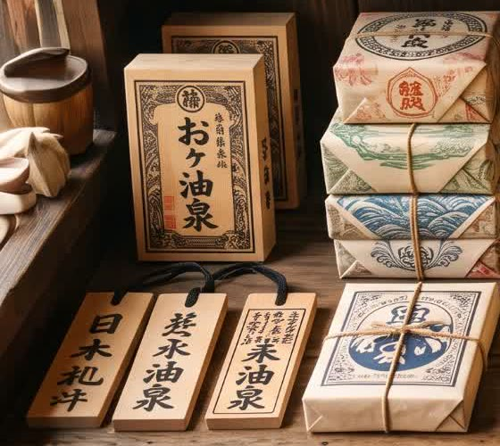
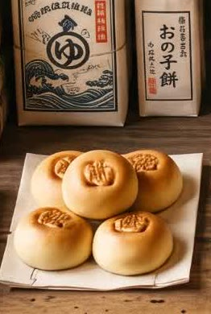
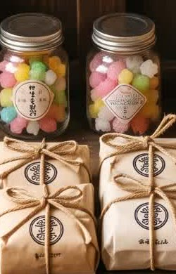
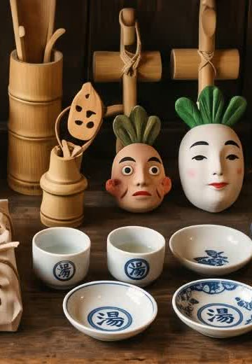
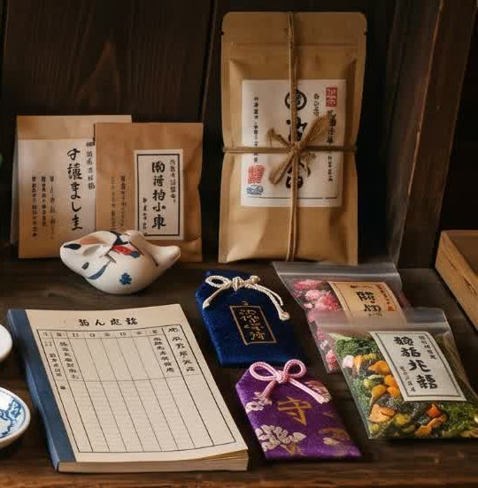

[神湯]
강과 숲의 신도 반한
원천 그대로의 약탕
“아부라야”는 먼 길을 오신 신들께서
지친 몸을 씻고 편히 쉬어가실 수 있도록
해 질 녘마다 불을 밝히고 약탕을 데웁니다.
강과 숲의 신도 반한
원천 그대로의 약탕
신께 올리는 제철 공물과
팥소 가득한 만주
얼굴을 가린 신들을 위한
가면과 湯 잔
신의 기운을 담은
영험한 부적과 약초차
02_ BATH
03_ SOUVENIR
04_ RESERVATION
05_ LOCATION
강 건너 붉은 다리를 지나면 불 밝힌 목조 온천장이 보입니다.
해 질 녘 등불이 켜지면 영업을 시작하며, 바다 열차 정류장에서 걸어서 오실 수 있습니다.
ABOUT ABURAYA
油屋 · THE BATHHOUSE
아부라야는 인간의 시간이 멈춘 뒤 문을 엽니다. 강의 신, 숲의 정령, 눈과 바다의 신이 붉은 다리를 건너 각자의 탕과 객실로 향합니다.
목욕탕이 자리한 유노마치 계곡에는 삼나무 숲길, 등불 시장, 바다 열차 정류장이 이어집니다. 이 페이지의 시설과 지역 설정은 세계관 체험을 위한 창작 안내입니다.
온천과 객실 살펴보기 ›신들이 인간 세계에서 아부라야로 들어오는 첫 관문입니다.
약초와 온천수가 모이는 안개 낀 산골짜기입니다.
목욕을 마친 신들이 공물과 간식을 고르는 밤 시장입니다.
GIFTS FOR THE GODS
인간용 기념품 대신, 목욕을 마친 신과 정령을 위한 공물·약탕 패·부적을 준비했습니다.

薬湯札 · 산신 추천탕지기에게 원하는 약초 배합을 전하는 신령 전용 표찰.

神饌 · 인기 공물온천 증기로 쪄내어 목욕 뒤 허기를 달래는 팥 만주.

金平糖 · 작은 정령용그을음 정령과 어린 신들을 위한 오색 설탕 공물.

お面 · NEW본모습을 감추는 신을 위한 가면과 약차 전용 잔.

御守 · 밤길 수호긴 귀로를 앞둔 신에게 올리는 부적과 따뜻한 약차.